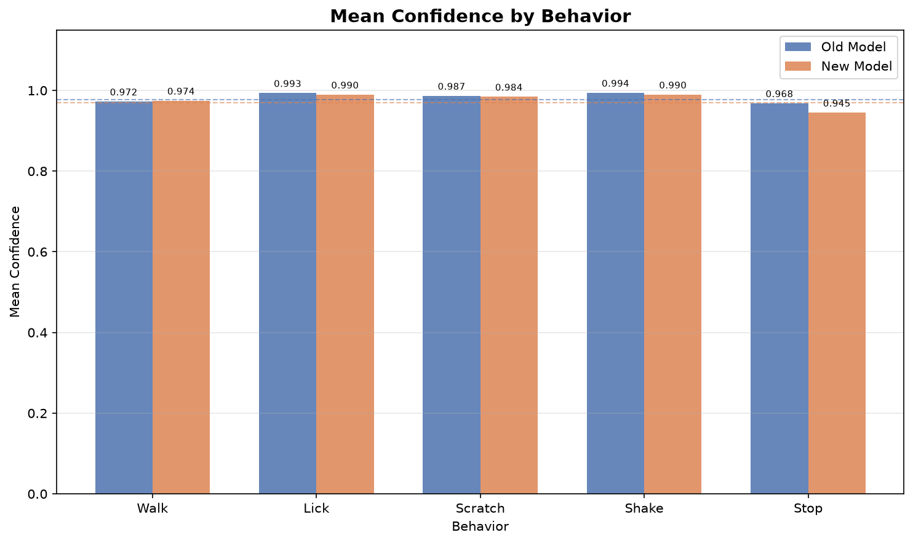
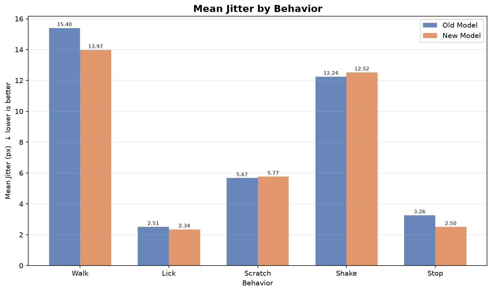
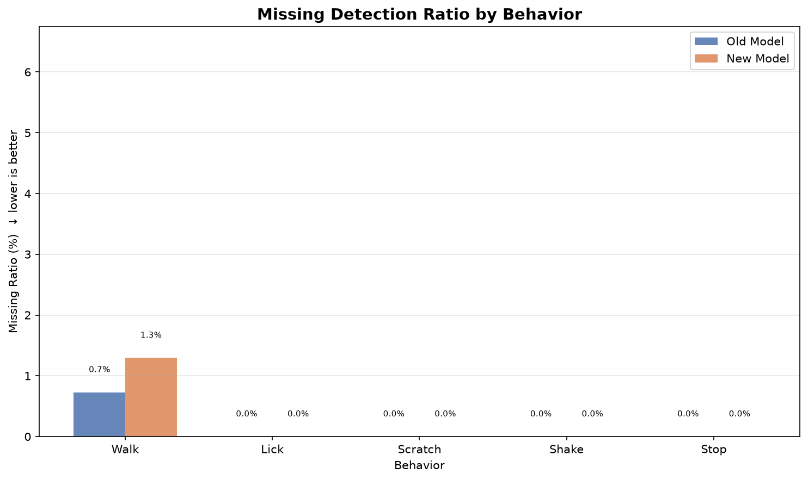
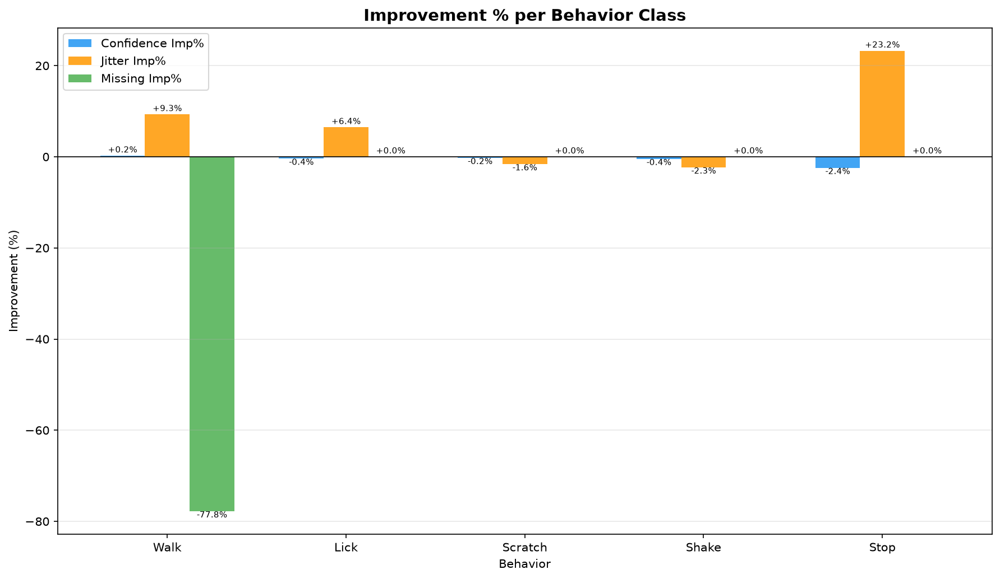
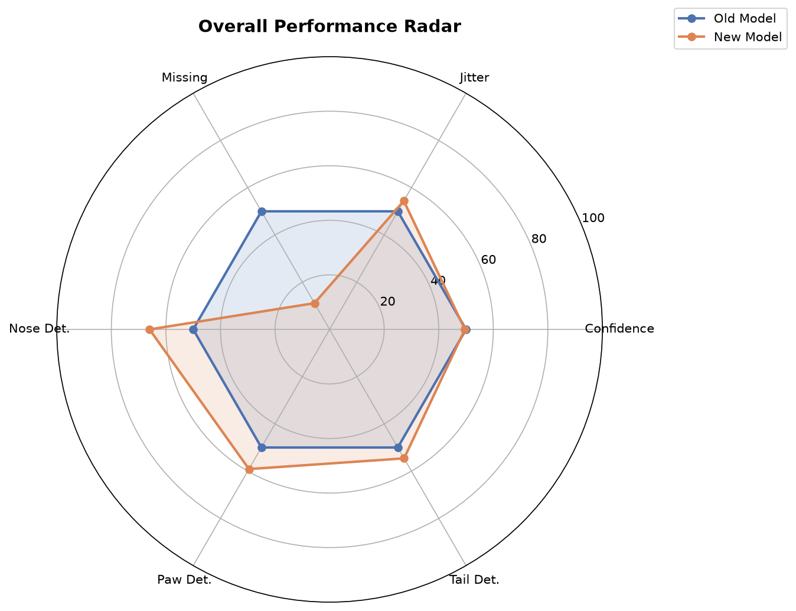
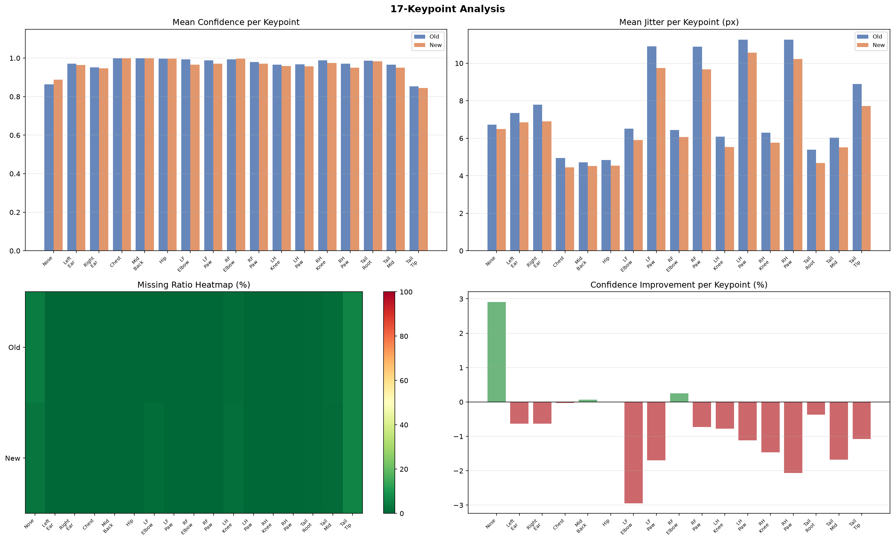
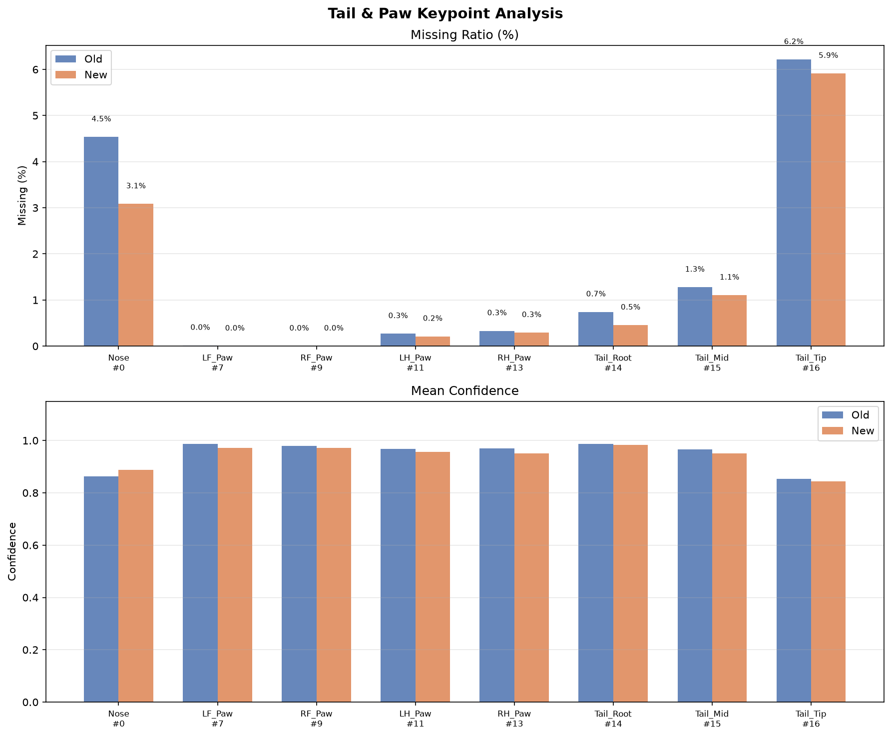

YOLO Pose Model Comparison Report
Old Model
v11s_116.pt
28.71 px
P95 Jitter（主指標，越小越好）
[參考] Composite Score
New Model
v11s_117.pt
26.22 px
P95 Jitter（主指標，越小越好）
[參考] Composite Score
NEW MODEL IS MORE STABLE
主指標：P95 Jitter Improvement +8.69%
Key Metrics
★ P95 Jitter (主指標) ↓ better
+8.69%
28.71px → 26.22px
[參考] Confidence
-0.84%
0.978 → 0.970
[參考] Mean Jitter ↓ better
+8.82%
7.43px → 6.77px
[參考] Missing Ratio ↓ better
-77.78%
0.2% → 0.4%
[參考] Tail Tip Missing ↓ better
+4.82%
6.2% → 5.9%
[參考] Best Behavior
+7.29%
Stop → improved most
[參考] Worst Behavior
-20.01%
Walk → needs attention
Behavior Breakdown
| Behavior |
Old Conf | New Conf | Conf Δ |
Old Jitter | New Jitter | Jitter Δ |
Old Miss | New Miss | Miss Δ |
Score |
| Walk | 0.972 | 0.974 | +0.22% | 15.40 | 13.97 | +9.29% | 0.7% | 1.3% | -77.78% | -20.01% |
| Lick | 0.993 | 0.990 | -0.39% | 2.51 | 2.34 | +6.45% | 0.0% | 0.0% | +0.00% | +2.12% |
| Scratch | 0.987 | 0.984 | -0.23% | 5.67 | 5.77 | -1.61% | 0.0% | 0.0% | +0.00% | -0.64% |
| Shake | 0.994 | 0.990 | -0.44% | 12.24 | 12.52 | -2.32% | 0.0% | 0.0% | +0.00% | -0.97% |
| Stop | 0.968 | 0.945 | -2.42% | 3.26 | 2.50 | +23.25% | 0.0% | 0.0% | +0.00% | +7.29% |
Visualizations
Confidence Comparison

Jitter Comparison

Missing Ratio

Improvement %

Performance Radar

17-Keypoint Analysis

Tail & Paw Analysis

Recommendation
✅ 依主指標（P95 抖動），Replace old model with new model.
⚠ 注意：[參考] 複合分數建議相反的結論（舊模型較優），但混入了信心值/缺失率等你不特別在意的指標，請以主指標為準。
Benchmark: 27 videos | Weights: Conf 35% / Jitter 35% / Missing 30%